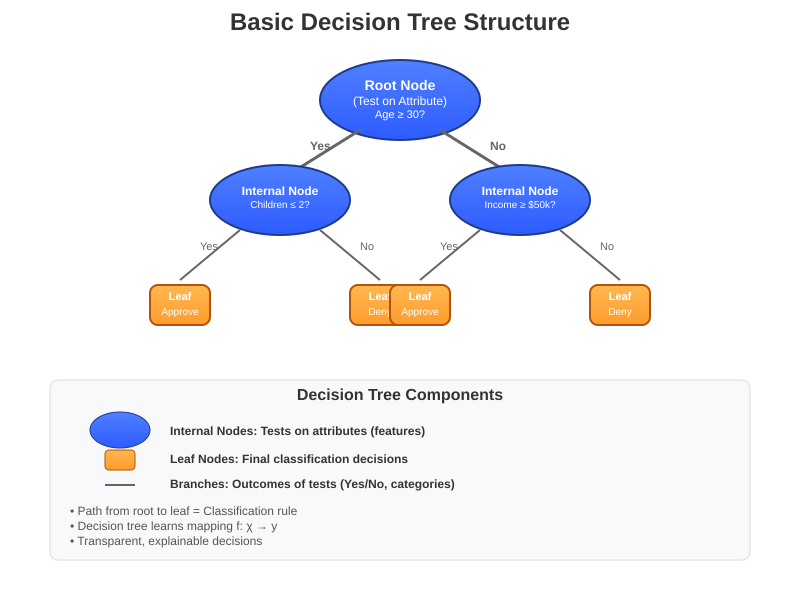
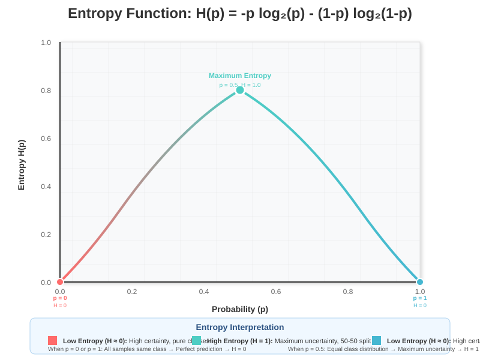
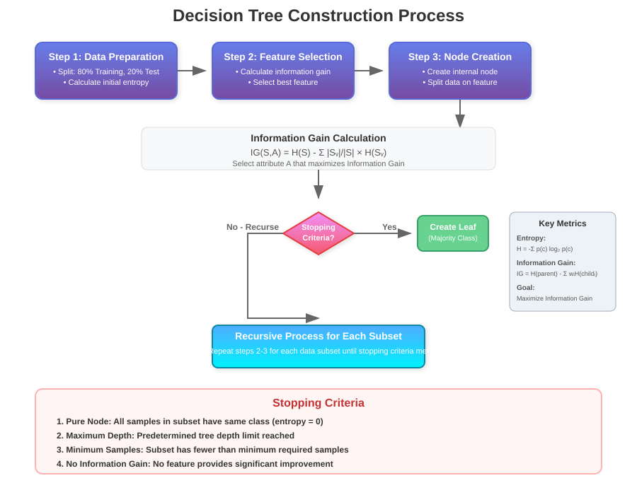
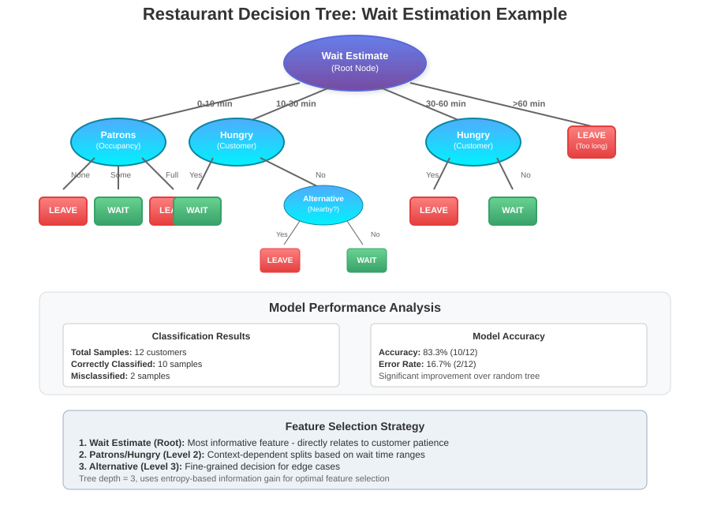
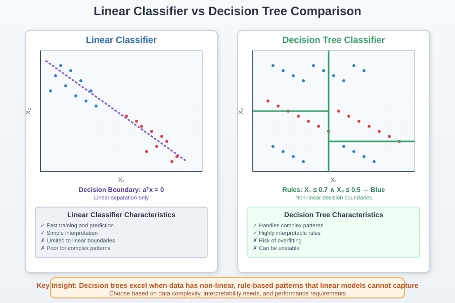

Decision Trees: Complete Guide to Classification and Machine Learning
🧭 Quick Navigation
- Introduction & Core Concepts
- Mathematical Foundation: Entropy & Information Gain
- Decision Tree Construction Process
- Classification Examples & Case Studies
- Decision Trees vs Linear Models
- Advantages & Limitations
- Implementation & Tools
- References & Further Reading
📚 Introduction & Core Concepts
Decision trees are among the most intuitive and interpretable machine learning algorithms, mirroring human decision-making processes through a series of sequential questions. They represent a powerful extension from linear regression into the realm of nonlinear classifiers.
What is a Decision Tree?
A decision tree is essentially a flowchart where:
- Internal nodes represent tests on attributes (features)
- Branches represent outcomes of tests
- Leaf nodes represent class labels or decisions
- Paths from root to leaf represent classification rules

Key Components
Feature Space (χ): A vector of categorical or numerical data representing the input attributes.
Outcome Class (y): The target variable we want to predict (binary or multi-class).
Decision Rule (f): The mapping function f: χ → y that the decision tree learns.
f: χ → y
The decision tree creates classification rules of the form:
C = {(x, y) | x(k) = v_k, k \text{ subset of all feature indices}}
Real-World Example: Loan Approval
Consider a bank's loan approval process:
- Question 1: "Are you over 30?"
- If Yes → Question 2: "How many children do you have?"
- Less than 2 → Approve Loan
- More than 2 → Deny Loan
- If No → Follow different path...
This systematic questioning creates a transparent, explainable decision process.
🔢 Mathematical Foundation: Entropy & Information Gain
The key to building effective decision trees lies in determining which features to split on and in what order. This is accomplished through entropy and information gain.
Understanding Entropy
Entropy measures the uncertainty or impurity in a dataset. For a binary classification problem:
H(Z) = -\sum_{z \in Z} P(z) \log P(z)
For a binary outcome with probability p of success:
\text{Entropy} = -p \log p - (1-p) \log(1-p)

Entropy Properties
- Maximum entropy (1.0): When p = 0.5 (maximum uncertainty)
- Minimum entropy (0.0): When p = 0 or p = 1 (no uncertainty)
- Goal: Minimize entropy through strategic splitting
Information Gain
Information gain measures how much entropy is reduced by splitting on a particular feature:
\text{Information Gain} = H(\text{parent}) - \sum_{i} \frac{|S_i|}{|S|} H(S_i)
Where: - H(parent) = entropy before split - S_i = subset after split on value i - |S_i|/|S| = proportion of samples in subset i
Greedy Algorithm for Tree Construction
- Calculate entropy for current dataset
- For each feature, calculate information gain from splitting
- Select feature with highest information gain
- Split data based on selected feature
- Repeat recursively for each subset until stopping criteria met
🏗️ Decision Tree Construction Process
Building a decision tree involves several systematic steps and important considerations.
Data Splitting Strategy
Training/Validation Split: - 80-20 split: 80% for training, 20% for validation - 70-30 split: Alternative for smaller datasets - Cross-validation: Essential for model evaluation
\text{Typical Split Ratio} = \frac{\text{Training Data}}{\text{Validation Data}} = \frac{80\%}{20\%}
Construction Algorithm

Step-by-Step Process:
- Start with entire dataset at root node
- Calculate entropy of current node
- Evaluate all features for potential splits
- Choose feature with maximum information gain
- Create branches for each feature value
- Recursively apply to each branch
- Stop when criteria met:
- Pure nodes (entropy = 0)
- Maximum depth reached
- Minimum samples threshold
- No more features available
Hyperparameters
Key parameters to control tree growth: - Maximum depth: Limits tree complexity - Minimum samples per leaf: Prevents overfitting - Maximum features: Controls feature selection - Split criteria: Entropy, Gini impurity, etc.
Stopping Criteria
When to stop splitting: - All samples in node have same class - Maximum depth reached - Minimum number of samples threshold - No significant information gain
📊 Classification Examples & Case Studies
Restaurant Waiting Example
Consider predicting whether customers will wait at a restaurant based on 10 features:
Dataset Features: 1. Alternate: Alternative restaurant nearby? 2. Bar: Comfortable bar area? 3. Fri/Sat: Weekend visit? 4. Hungry: Customer hungry? 5. Patrons: Restaurant occupancy (None/Some/Full) 6. Price: Price range ($, $$, $$$) 7. Raining: Weather condition 8. Reservation: Reservation made? 9. Type: Restaurant type (French/Italian/Thai/Burger) 10. WaitEstimate: Expected wait time (0-10, 10-30, 30-60, >60 minutes)

Misclassification Error Calculation
The empirical error measures tree performance:
R(f) = \frac{1}{N} \sum_{i=1}^{N} \mathbf{I}(f(x_i) \neq y_i)
Where: - f(x_i) = predicted class for sample i - y_i = true class for sample i - I = indicator function (1 if mismatch, 0 if correct)
Performance Comparison
Tree 1 (Random Construction): - Misclassified: 6 out of 12 samples - Error rate: 50% - Poor performance indicator
Tree 2 (Entropy-Based Construction):
- Misclassified: 2 out of 12 samples
- Error rate: 16.7%
- Significantly better performance
Majority Rule Labeling
For leaf nodes containing multiple samples:
\text{Label} = \arg\max_{y} \sum_{i: (x_i, y_i) \in \text{leaf}} \mathbf{I}(y_i = y)
Assign the most frequent class in the leaf as the prediction.
⚖️ Decision Trees vs Linear Models
Understanding when to use decision trees versus linear classifiers is crucial for model selection.
Linear Classification Limitations
Linear classifiers work well when classes are linearly separable:
\text{Decision boundary: } a^T x > 0

When Decision Trees Excel
Scenario 1: Non-linear Decision Boundaries - Complex, non-linear relationships between features - Multiple decision regions - Interactions between features
Scenario 2: Mixed Data Types - Combination of numerical and categorical features - No need for feature scaling or normalization - Natural handling of missing values
Scenario 3: Interpretability Requirements - Need for explainable decisions - Regulatory compliance - Domain expert validation
Numerical vs Categorical Data
Numerical Data: - Continuous values (age, income, temperature) - Requires threshold-based splits - Can be discretized into categories
Categorical Data: - Discrete, finite values (gender, color, type) - Natural splitting on category values - Often easier to interpret
\text{Binary Categorical: } \{0, 1\} \text{ or } \{\text{True}, \text{False}\}
Model Complexity Comparison
| Aspect | Linear Models | Decision Trees |
|---|---|---|
| Interpretability | Moderate | High |
| Training Speed | Fast | Moderate |
| Prediction Speed | Very Fast | Fast |
| Overfitting Risk | Low | High |
| Feature Engineering | Required | Minimal |
| Non-linear Patterns | Poor | Excellent |
✅ Advantages & Limitations
Advantages
1. Human-Algorithm Interaction - Mirrors natural decision-making processes - Easy to understand and interpret - "White box" model (transparent decisions)
2. Data Flexibility - Handles both numerical and categorical data - No assumptions about data distribution - Robust to outliers
3. Minimal Data Preparation - No need for feature scaling - Handles missing values naturally - Can mix different data types
4. Built-in Feature Selection - Automatically ranks feature importance - Identifies most predictive features - Provides feature hierarchy
5. Computational Efficiency - Fast prediction once trained - Scales well with large datasets - Parallel tree construction possible
6. Statistical Validation - Easy cross-validation - Clear performance metrics - Testable hypotheses
Limitations
1. Overfitting Tendency - High capacity for memorizing training data - Poor generalization without proper controls - Requires pruning techniques
\text{Overfitting Risk} \propto \frac{\text{Model Complexity}}{\text{Training Data Size}}
2. Non-Robust to Data Changes - Small data perturbations can change tree structure - Unstable predictions - Sensitive to training set variations
3. NP-Complete Optimization - Finding optimal tree is computationally intractable - Greedy algorithms provide approximate solutions - No guarantee of global optimum
4. Bias Towards Certain Features - Preference for features with more levels - May ignore important but subtle patterns - Can create unnecessarily complex trees
Mitigation Strategies
For Overfitting: - Pruning: Remove branches that don't improve validation performance - Random Forests: Ensemble of trees with bootstrap sampling - Cross-validation: Robust performance estimation
For Instability: - Bootstrap Aggregating (Bagging): Average multiple trees - Feature Randomization: Limit features considered at each split - Ensemble Methods: Combine multiple weak learners
🛠️ Implementation & Tools
Popular Libraries and Frameworks
Python Ecosystem:
- Scikit-learn: sklearn.tree.DecisionTreeClassifier
- XGBoost: Gradient boosted decision trees
- LightGBM: Fast gradient boosting framework
- CatBoost: Categorical feature handling
R Language: - rpart: Recursive partitioning - tree: Classification and regression trees - randomForest: Ensemble methods - C50: C5.0 algorithm implementation
Commercial Tools: - IBM SPSS Modeler: Visual decision tree builder - SAS Enterprise Miner: Enterprise-scale analytics - RapidMiner: Drag-and-drop interface - Microsoft SQL Server: Built-in data mining
Google Colab Integration

Basic Implementation Example:
from sklearn.tree import DecisionTreeClassifier
from sklearn.model_selection import train_test_split
from sklearn.metrics import accuracy_score
import pandas as pd
# Load data
data = pd.read_csv('restaurant_data.csv')
X = data.drop('will_wait', axis=1)
y = data['will_wait']
# Split data
X_train, X_test, y_train, y_test = train_test_split(
X, y, test_size=0.2, random_state=42
)
# Train decision tree
clf = DecisionTreeClassifier(
criterion='entropy',
max_depth=5,
min_samples_split=10,
random_state=42
)
clf.fit(X_train, y_train)
# Make predictions
y_pred = clf.predict(X_test)
accuracy = accuracy_score(y_test, y_pred)
print(f"Accuracy: {accuracy:.3f}")
Hyperparameter Tuning
Grid Search Example:
from sklearn.model_selection import GridSearchCV
param_grid = {
'max_depth': [3, 5, 7, 10],
'min_samples_split': [2, 5, 10],
'min_samples_leaf': [1, 2, 4],
'criterion': ['entropy', 'gini']
}
grid_search = GridSearchCV(
DecisionTreeClassifier(random_state=42),
param_grid,
cv=5,
scoring='accuracy'
)
grid_search.fit(X_train, y_train)
Hugging Face Models
🤗 Pre-trained Models: - Tree-based Transformers - Tabular Classification Models
📖 References & Further Reading
Foundational Papers
- Quinlan, J.R. (1986) - "Induction of Decision Trees" - Machine Learning
- Original ID3 algorithm formulation
-
Information theory foundations
-
Breiman, L., Friedman, J., Olshen, R., & Stone, C. (1984) - "Classification and Regression Trees"
- Comprehensive CART methodology
-
Pruning techniques and validation
-
Quinlan, J.R. (1993) - "C4.5: Programs for Machine Learning"
- Improved decision tree algorithms
- Handling continuous attributes
Modern Research
- Chen, T. & Guestrin, C. (2016) - "XGBoost: A Scalable Tree Boosting System" - KDD
- ArXiv:1603.02754
-
Gradient boosting innovations
-
Ke, G. et al. (2017) - "LightGBM: A Highly Efficient Gradient Boosting Decision Tree" - NIPS
- Leaf-wise tree growth strategy
- GPU acceleration techniques
Comprehensive Resources
- Hastie, T., Tibshirani, R., & Friedman, J. (2009) - "The Elements of Statistical Learning"
- Chapter 9: Additive Models, Trees, and Related Methods
-
Mathematical foundations and theory
-
Murphy, K.P. (2012) - "Machine Learning: A Probabilistic Perspective"
- Chapter 16: Adaptive Basis Function Models
-
Bayesian perspectives on tree models
-
Zhou, Z.H. (2012) - "Ensemble Methods: Foundations and Algorithms"
- Random Forests and boosting techniques
- Theoretical analysis of ensemble performance
Online Resources
- Scikit-learn Decision Trees User Guide
- XGBoost Documentation
- Google's Machine Learning Crash Course - Decision Trees
Last updated: 2024 | Created for AI/ML practitioners and researchers